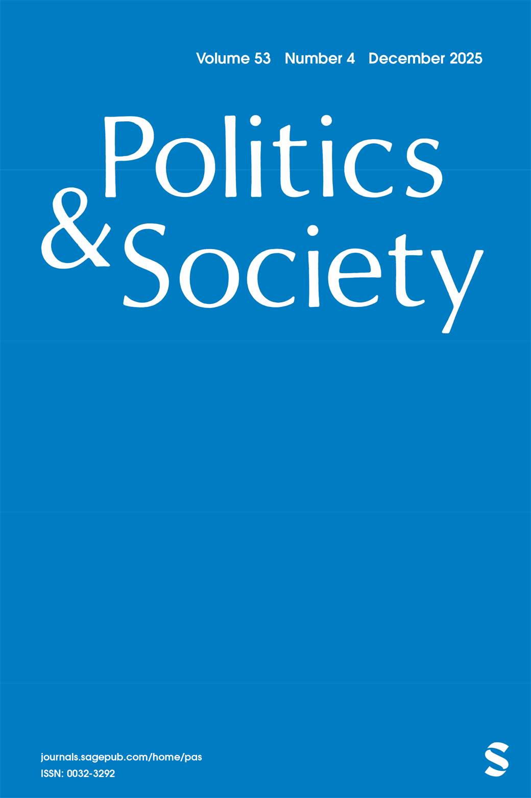
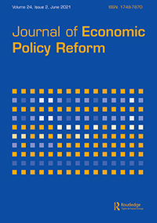

Journal Articles
In the Metaverse, Politicians Can Hear You Scream
In the Metaverse, Politicians Can Hear You Scream: Corporate Scandals, Big Tech Regulation, and the Microfoundations of Focusing Events
Media Effects Revisited: Corporate Scandals, Partisan Narratives, and Attitudes toward Cryptocurrency Regulation
"The Economy is Rigged": Inequality Narratives, Fairness, and Support for Redistribution in Six Countries
Banklash: How Media Coverage of Bank Scandals Moves Mass Preferences on Financial Regulation
The Art of the Shitty Deal: Media Frames and Public Opinion on Financial Regulation in the United States
Media Frames, Partisan Identification, and the Australian Banking Scandal

Quiet Politics in Tumultuous Times: Business Power, Populism, and Democracy

Death in Veneto? European Banking Union and the Structural Power of Large Banks
Computational Identification of Media Frames: Strengths, Weaknesses, and Opportunities
Are We All Amazon Primed? Consumers and the Politics of Platform Power

Structural Power and Political Science in the Post-Crisis Era

Structural Power and Bank Bailouts in the United Kingdom and the United States
The Political Economy of Unmediated Democracy
The Political Economy of Unmediated Democracy: Italian Austerity under Mario Monti
Why Don't Governments Need Trade Unions Anymore?
Why Don't Governments Need Trade Unions Anymore? The Death of Social Pacts in Ireland and Italy
The Politics of Common Knowledge
The Politics of Common Knowledge: Ideas and Institutional Change in Wage Bargaining
Do all Bridges Collapse?
Do all Bridges Collapse? Possibilities for Democracy in the European Union
Eppure, non si muove
Eppure, non si muove: Legal Change, Institutional Stability, and Italian Corporate Governance
Les silences de la France en mutation
Les silences de la France en mutation
Small States and Skill Specificity
Small States and Skill Specificity: Austria, Switzerland, and Interemployer Cleavages in Coordinated Capitalism
Institutional Change in Contemporary Capitalism
Institutional Change in Contemporary Capitalism: Coordinated Financial Systems since 1990
Single Country Studies and Comparative Politics
Single Country Studies and Comparative Politics
Puzzling, Powering, and 'Pacting'
Puzzling, Powering, and 'Pacting': The Informational Logic of Negotiated Reforms
Associations and Non-Market Coordination in Banking
Associations and Non-Market Coordination in Banking: France and Eastern Germany Compared
Can the State Create Cooperation?
Can the State Create Cooperation? Problems of Reforming the Labor Supply in France
The Future of the High-Skill Equilibrium in Germany
The Future of the High-Skill Equilibrium in Germany
Organizational Competition and the Neo-Corporatist Fallacy
Organizational Competition and the Neo-Corporatist Fallacy in French Agriculture
Full Citation Record
Complete publications with citation counts